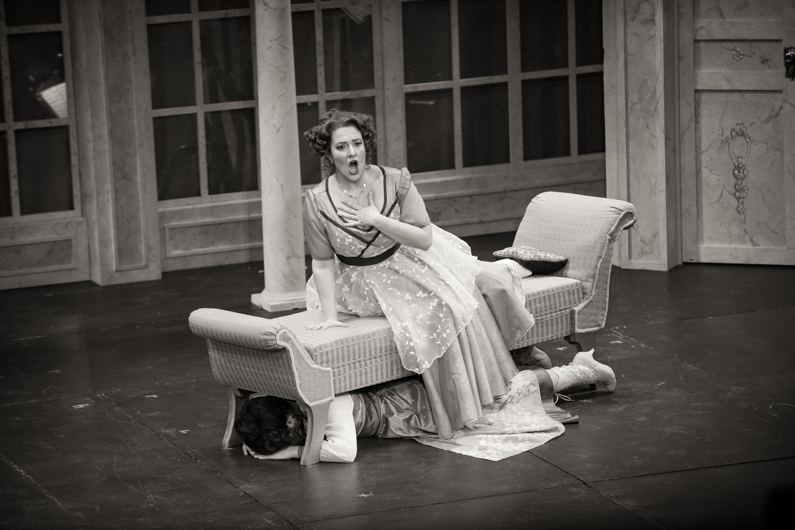

Biography
Vermont-born mezzo-soprano Brooke Larimer has been celebrated for her “richly hued voice and nicely timed comedic ability” (Pittsburgh in the Round), her "lusty presence" (Syracuse.com), and her "stunningly dramatic" performances (ClevelandClassical.com).
“Charismatic” (OperaWire), Vermont-born mezzo-soprano Brooke Larimer has been celebrated for her “richly hued voice and nicely timed comedic ability” (Pittsburgh in the Round), her "lusty presence" (Syracuse.com), and her "stunningly dramatic" performances (ClevelandClassical.com). Her career includes performances of roles spanning the centuries of inherited repertoire through premieres of contemporary American works.
In 2023, Brooke returns to Opera on the James to reprise the role of Zita in Gianni Schicchi, co-produced with Lynchburg Symphony Orchestra.
Last year, Brooke created the role of La Poncia in the world premiere production of La Casa de Bernarda Alba with Cleveland Opera Theater and sang Composer in Ariadne auf Naxos and Ruth in Pirates of Penzance with Barn Opera. She was scheduled to sing Mistress Quickly in Raylynmor Opera’s production of Falstaff that was canceled for COVID-19.
During the pandemic, she recorded Mistress Quickly for Social Distance Opera’s recording of Falstaff, performed excerpts of Maia Aprahamian’s operas for Bagaduce Music Center, and appeared in the immersive, COVID-friendly, walking-tour production Voyeur: the Windows of Toulouse-Lautrec on the streets of the West Village.
Brooke has performed Anna (Second Woman) in Death by Classical’s Dido and Aeneas opposite Daniela Mack, Economides in New York City Opera’s workshop of Stonewall, Filippyevna in Syracuse Opera’s production of Eugene Onegin, and Auntie in Peter Grimes with Madison Lyric Stage. As co-founder and a founding artist member of Boston Opera Collaborative, she sang the title role in Carmen and Bradamante in Alcina. With Center for Contemporary Opera and Armel Music Festival she performed the roles of Aunt Sadie and Older Boy #1 in the Hungarian and French premieres of William Mayer’s A Death in the Family at Szeged National Theatre and Opéra d’Avignon.
Brooke is a graduate of Vanderbilt University and The Boston Conservatory, and was a young artist at Opera New Jersey, Natchez Festival, and Opera on the James. She is co-host of the Indie Opera Podcast. She is currently training as an ADHD coach, and lives in The Bronx with her rescue mutt, Cindy.
Ms. Larimer is a graduate of Vanderbilt University and The Boston Conservatory, and was a young artist at Opera New Jersey, Natchez Festival, and Opera on the James. She has won awards from the G. Gershwin International Competition, Sun Valley Opera Competition, and Lakes Region Opera Idol. She is co-host of the Indie Opera Podcast and is a proud resident of The Bronx.